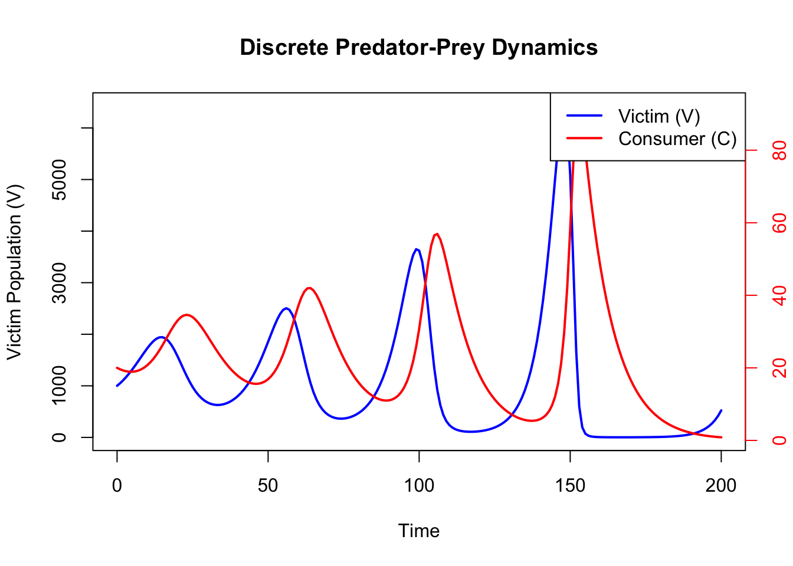
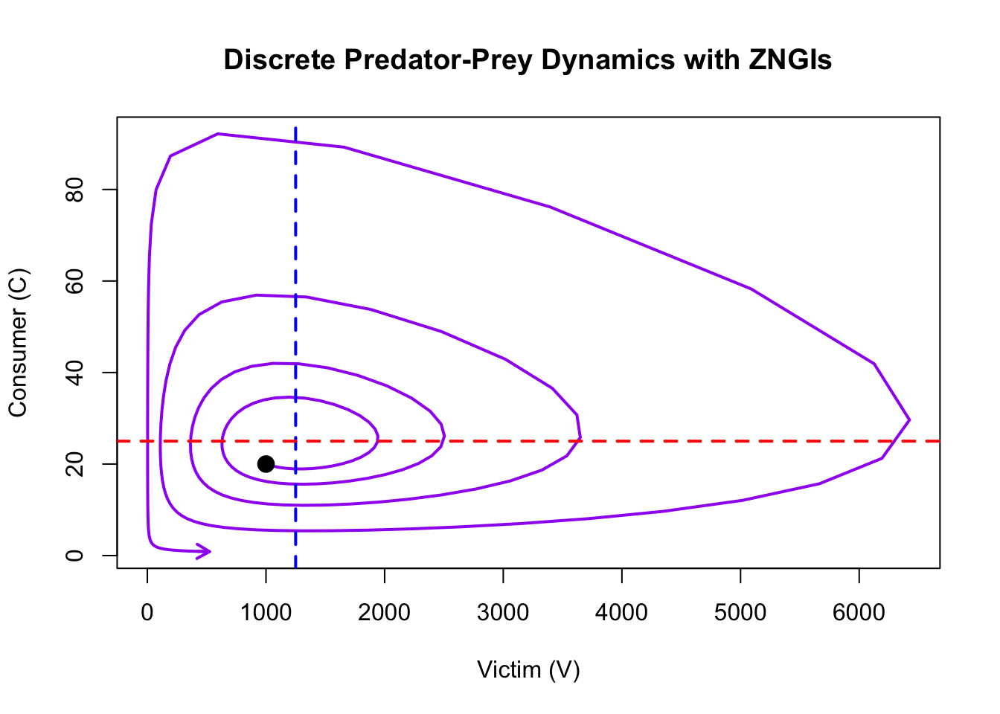

21 Continuous-time Lotka-Volterra Predator-Prey Model in R
21.1 Background
The Lotka-Volterra model describes the interaction between predators and prey. This document demonstrates how to program the continuous-time version of the model in R. Then, by varying the parameters you can explore its features, and visualise the dynamics of predator and prey populations over time.
Learning outcomes:
- Use of R to investigate an ecological model.
- Understanding how the Lotka-Volterra predator-prey model works, and how it is visualised.
21.2 Your task
In R/RStudio, you will create an R script that programs the continuous time version of the Lotka-Volterra model. You will then use this model to investigate how the model works and how varying the parameters affects the system.
21.2.1 Step 0: Create a new script
- Open R Studio and create a new script (File > New File > R Script).
- Save it with a useful name (File > Save).
- Type or copy/paste the following code, step-by-step, into the Script.
- Run the code, or parts of it, selecting the parts you want to run and clicking “Run”.
21.2.2 Step 1: Load Necessary Libraries
We use the deSolve package to solve the system of differential equations numerically. Note that you may need to install the package first using the command install.packages("deSolve").
21.2.3 Step 2: Define the Model
The system of equations is defined as follows:
- Victim (prey) population growth: \(\frac{dV}{dt} = RV - aVC\)
- Consumer (predator) population growth: \(\frac{dC}{dt} = afVC - qC\)
The function below implements these equations in R.
21.2.4 Step 3: Set Parameters and Initial Conditions
We set the parameters and initial conditions for the model. I use the same nomenclature as the PDF from the Excel exercise. The parameters are as follows: R is the victim population growth rate, a is the attack rate of the predator, f is the conversion efficiency of the predator and q is the predator starvation (death) rate. For more detail about these, read the relevant section in the Neal textbook.
21.2.5 Step 4: Simulate the Model
We simulate the model over a specified time period and store the results.
21.2.6 Step 5: Visualise the Dynamics
How does the size of the two populations change through time? You should see that the amplitude and period change as the parameters change.
- Amplitude: Half the difference between a population’s peak and trough. It shows how much the population fluctuates.
- Period: The time it takes for a population to complete one full cycle of oscillation. i.e. the peak-to-peak distance. It indicates the speed of the population cycles.
21.2.6.1 Population Dynamics Over Time
The plot below shows the changes in consumer and victim populations over time.
# Plot victim population on the primary y-axis
plot(output_df$time, output_df$V, type = "l", col = "blue", lwd = 2,
ylab = "Victim Population (V)", xlab = "Time", main = "Predator-Prey Dynamics")
# Add consumer population on a secondary y-axis
par(new = TRUE)
plot(output_df$time, output_df$C, type = "l", col = "red", lwd = 2,
axes = FALSE, xlab = "", ylab = "")
axis(side = 4, col = "red", col.axis = "red")
mtext("Consumer Population (C)", side = 4, line = 3, col = "red")
# Add legend
legend("topright", legend = c("Victim (V)", "Consumer (C)"),
col = c("blue", "red"), lwd = 2)
21.2.6.2 Phase Plot with ZNGIs
The phase plot shows the relationship between victim and consumer populations. Zero Net Growth Isoclines (ZNGIs) indicate where the growth rate of each population is zero.
plot(output_df$V, output_df$C, type = "l", col = "purple", lwd = 2,
xlab = "Victim (V)", ylab = "Consumer (C)",
main = "Predator-Prey Dynamics with ZNGIs")
# Victim ZNGI
abline(v = parameters["q"] / (parameters["a"] * parameters["f"]), col = "blue",
lwd = 2, lty = 2)
# Consumer ZNGI
abline(h = parameters["R"] / parameters["a"], col = "red", lwd = 2, lty = 2)
# Add point for initial population sizes
points(output_df$V[1], output_df$C[1], pch = 19, col = "black", cex = 1.5)
# Add an arrow to the end of the line
arrows(x0 = output_df$V[nrow(output_df) - 1],
y0 = output_df$C[nrow(output_df) - 1],
x1 = output_df$V[nrow(output_df)],
y1 = output_df$C[nrow(output_df)],
col = "purple", length = 0.1, lwd = 2)
21.2.7 Questions
1. Oscillatory Dynamics - Run the simulation with the default parameters. Describe the oscillatory behavior of predator and prey populations over time. How do the populations interact? - What happens to the amplitude and period of the oscillations if you double the initial prey population (\(V\))? What about doubling the initial predator population (\(C\))?
2. Neutral Stability - Change the predator’s death rate (\(q\)) and observe the long-term dynamics. Do the oscillations persist, amplify, or diminish? Why?
3. Equilibrium Points - Identify the equilibrium point (coexistence) for the default parameters. Verify it by calculating the equilibrium populations using: \[ V^* = \frac{q}{a \cdot f}, \quad C^* = \frac{R}{a}. \] Do the simulated populations approach these values? - How do the equilibrium populations change when you increase the prey growth rate (\(R\)) or predator attack rate (\(a\))?
4. Parameter Sensitivity - Investigate the effect of each parameter on the dynamics: - Alter \(R\) (prey growth rate). How does this affect the predator population? - Alter \(q\) (predator death rate). What happens to the predator-prey oscillations? - Alter \(f\) (conversion efficiency). What happens to the predator-prey oscillations? - Alter \(a\) (attack rate). What happens to the predator-prey oscillations?
5. Phase Plane Analysis - Plot the phase plane with the default parameters. Add the Zero Net Growth Isoclines (ZNGIs) for predators and prey. What do these isoclines represent? - Change the prey growth rate (\(R\)), predator attack rate (\(a\)) and other parameters. How do the positions of the isoclines change? What about the shape and size of the orbits? What does this imply for the dynamics? - Change the initial population sizes. Does the initial population size impact the dynamics?
6. Extinction Scenarios - Set a very high predator death rate (\(q\)) or a very low attack rate (\(a\)). What happens to the predator population? Is it possible to drive the predators extinct? What are the implications for prey dynamics? - What conditions (parameter combinations) are most likely to lead to extinction of both predators and prey?
7. Real-World Relevance - Reflect on the assumptions of the model. What real-world factors might disrupt the neutrally stable oscillations predicted by the Lotka-Volterra model?
21.2.8 Conclusion
This document demonstrates how to implement and explore the Lotka-Volterra predator-prey model in continuous time using R. By varying parameters and initial conditions, you can investigate how predator-prey dynamics are influenced by ecological factors. Notice that, unlike the discrete time model, which has an implicit time lag of 1, the continuous-time model results in dynamically stable cycles rather than cycles with increasing amplitude (and certain extinction). To fit a discrete-time version of the model, take a look at the Excel exercise (here) or the R exercise (here).
The main findings of the continuous time model are as follows:
Oscillatory Dynamics: Predator and prey populations exhibit cyclical oscillations. The prey population increases when predator numbers are low, while the predator population grows when prey is abundant.
Neutral Stability: The oscillations are neutrally stable under idealized conditions; they persist indefinitely without damping or amplification unless external factors or parameter changes are introduced.
Equilibrium Points: There are two equilibria:
- The trivial equilibrium, where both predator and prey populations are zero.
- The coexistence equilibrium, where the predator and prey populations remain constant over time.
Parameter Dependence: The amplitude and period of the oscillations depend on the parameters \(R\), \(a\), \(f\), and \(q\).
Phase Plane Behavior: Predator and prey populations follow closed orbits in the phase plane around the coexistence equilibrium, under the assumption that the system remains undisturbed.